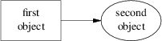

The most natural way to name locations in pic is relative to objects. In order to do this, you have to be able you have to be able to name objects. The pic language has rich facilities for this that try to emulate the syntax of English.
The simplest (and generally the most useful) way to name an object is with a last clause. It needs to be followed by an object type name; box, circle, ellipse, line, arrow, spline, "", or [] (the last type refers to a composite object which we’ll discuss later). So, for example, the last circle clause in the program attached to Figure 9.1.3 refers to the last circle drawn.
More generally, objects of a given type are implicitly numbered (starting from 1). You can refer to (say) the third ellipse in the current picture with 3rd ellipse, or to the first box as 1st box, or to the fifth text string (which isn’t an attribute to another object) as 5th "".
Objects are also numbered backwards by type from the last one. You can say 2nd last box to get the second-to-last box, or 3rd last ellipse to get the third-to-last ellipse.
In places where nth is allowed, ‘expr’th is also allowed. Note that ’th is a single token: no space is allowed between the ’ and the th. For example,
for i = 1 to 4 do {
line from ‘i’th box.nw to ‘i+1’th box.se
}
You can also specify an object by referring to a label. A label is a word (which must begin with a capital letter) followed by a colon; you declare it by placing it immediately before the object drawing command. For example, the program
.PS A: box "first" "object" move; B: ellipse "second" "object" move; arrow right at A .r; .PE
declares labels A and B for its first and second objects. Here’s what that looks like:

Figure 9-1: Example of label use
The at statement in the fourth line uses the label A (the behavior of at is explained in the next section). We’ll see later on that labels are most useful for referring to block composite objects.
Labels are not constants but variables (you can view colon as a sort of assignment). You can say something like A: A + (1,0); and the effect is to reassign the label A to designate a position one inch to the right of its old value.